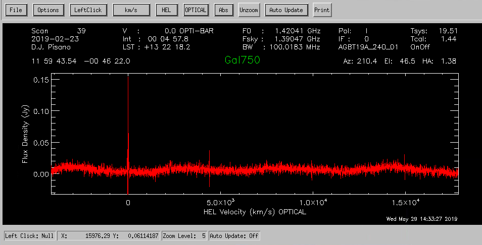
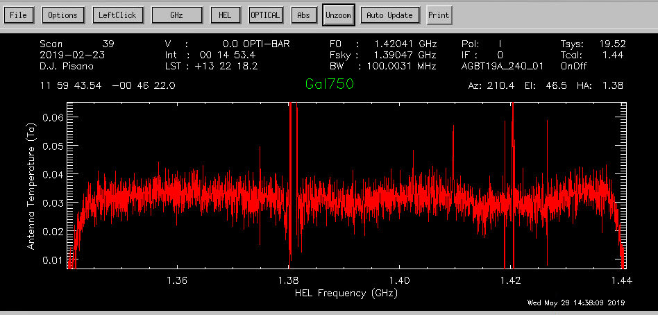
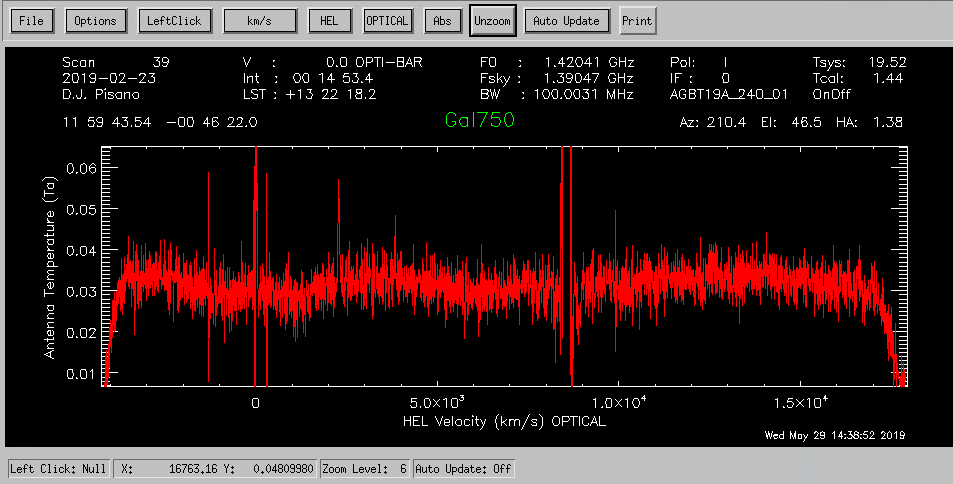
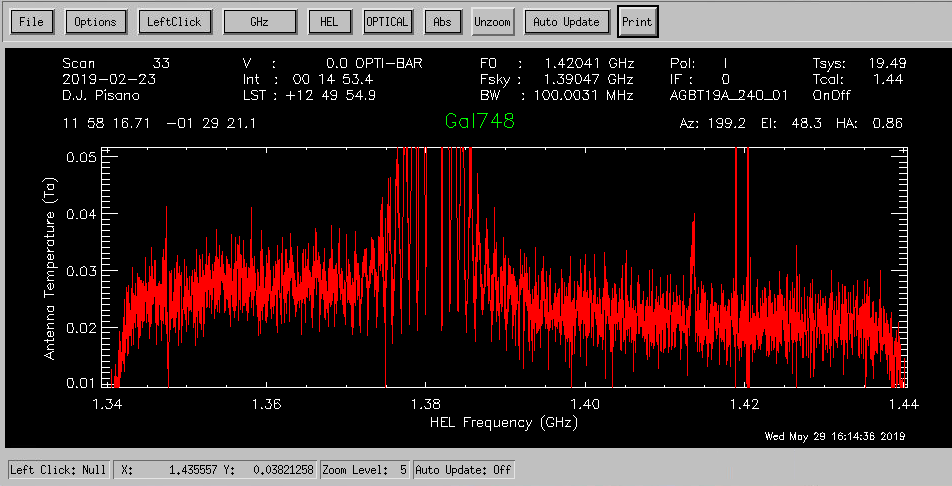
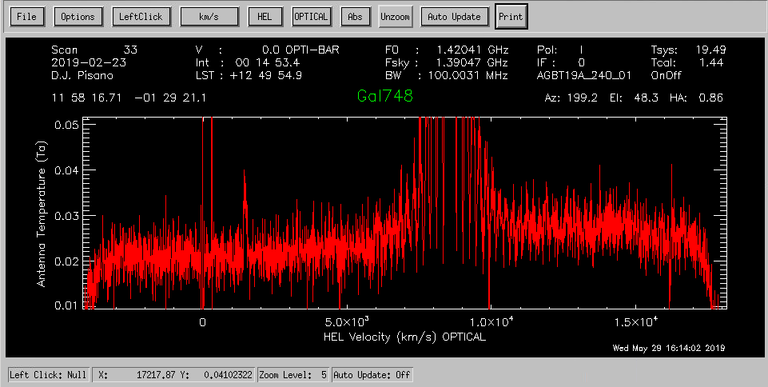

UAT2020 Scavenger Hunt #4:
Understanding the GBT Observing Program
4.0 Searching for galaxies using L-band wide observations with the GBT
On Friday, we will be observing with the GBT, searching for 21-cm emission from gas in a sample of very low surface brightness galaxies. Here is a link to the proposal we submitted to obtain the time.
a. What receiver will we use? What is the bandwidth and the range in frequencies we willl search? What velocity range does this correspond to?
b.
We take 4 10-min ON-OFF observations of each source in this project and then "stack" them. Why do we need to observe these sources for so much longer than those we observed at Arecibo? What is the advantage of taking multiple observations rather than one long one?
c.
Here are spectra of LSBG-750, a galaxy you looked at in SH#1, obtained at the GBT on Feb 23, 2019. The first two plots show one 10-minute ON-OFF spectrum in frequency and velocity units. The second two plots show another on the same night. What features do you see in the spectra and can you identify what they might be?



 d.
LSBG-750 was observed a total of 3 times on Feb 23, 2019. We can stack together the spectra to obtain a deeper exposure of the galaxy. The spectrum has been smoothed and the galaxy signal is shown in the last plot. What can you conclude about this galaxy?
d.
LSBG-750 was observed a total of 3 times on Feb 23, 2019. We can stack together the spectra to obtain a deeper exposure of the galaxy. The spectrum has been smoothed and the galaxy signal is shown in the last plot. What can you conclude about this galaxy?


 DR15Nav
DSS2blu.03
NED1.0
e.
The galaxy LSBG-748 was also observed 3 times on Feb 23, 2019. Below is the stacked spectrum. What can you conclude about this galaxy?
DR15Nav
DSS2blu.03
NED1.0
e.
The galaxy LSBG-748 was also observed 3 times on Feb 23, 2019. Below is the stacked spectrum. What can you conclude about this galaxy?


 DR15Nav
DSS2blu.03
NED1.0
DR15Nav
DSS2blu.03
NED1.0
Last updated Fri Jun 14 07:31:59 EDT 2019
by becky